În stînga este slide-ul din curs, în dreapta aceeași figură, calculată în browser din aceleași date. Butonul ▶ modifică parametrul pas cu pas.
De la jocuri de noroc la axiome · Variabile aleatoare și distribuții · Media și varianța · Distribuții comune și dependență · Media condiționată și varianța condiționată · Legea numerelor mari și CLT · Numere aleatoare și Monte Carlo · Modelul binomial · Procese stochastice în timp discret · Procesul Wiener și mișcarea browniană geometrică
De la jocuri de noroc la axiome
Exemplu: zile de scădere consecutive
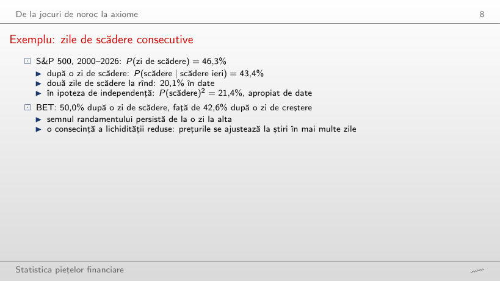
Probabilități condiționate pentru evenimentul D, randamente logaritmice zilnice
Răspuns
11,85%, de 2,8 ori P(D). Două pierderi de peste 2% la rînd au frecvența 0,51%, față de 0,18% sub independență. Semnul randamentului aproape nu persistă la S&P 500, dar pierderile mari vin grupate: volatility clustering. La BET persistă și semnul, la x = 0: 50,0% după o zi de scădere față de 42,6% după o zi fără scădere, efect al tranzacționării rare (thin trading).
Variabile aleatoare și distribuții
O variabilă aleatoare discretă și una continuă
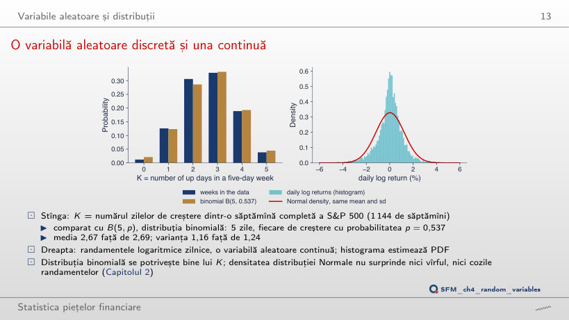
Răspuns
Varianța lui K depășește valoarea binomială: 1,47 față de 1,24, raportul 1,18. Distribuția binomială presupune zile independente; cu autocorelația pozitivă a randamentelor BET, zilele de creștere vin mai des una după alta, deci săptămînile cu multe sau cu puține zile de creștere sînt mai frecvente. Media rămîne aproape de 5p: 2,67 față de 2,70. Pentru S&P 500, cu autocorelația −0,099, raportul este 0,93; pentru DAX tot 0,93.
CDF empirică și cuantila de 1% a S&P 500
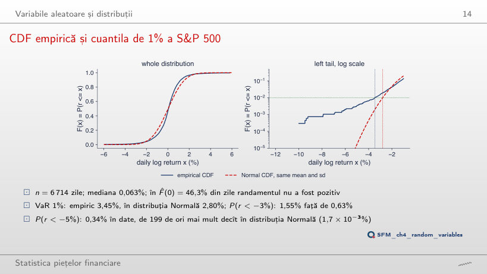
Răspuns
Circa 1,94: VaR 0,1% este 7,22% în date și 3,72% în distribuția Normală. La α = 5% raportul este 0,94 (1,85% față de 1,97%). Dacă diferența ar fi doar de scală, raportul ar fi același la orice nivel; el crește spre coadă, deci problema este forma distribuției: un vîrf mai înalt și cozi mai groase. P(r < −5%) este 0,34% în date și 1,7 × 10−3% în distribuția Normală, de 199 de ori mai puțin.
Media și varianța
Exemplu lucrat: media și volatilitatea anuale
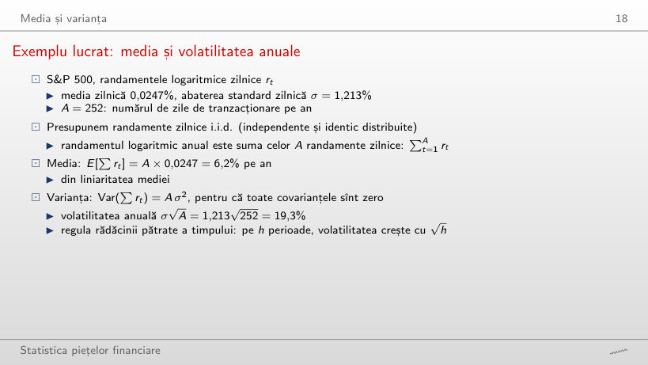
Momentele randamentelor logaritmice zilnice (%)
Exemplu lucrat: media și volatilitatea pe h zile
Răspuns
66,6% = 3,485 × √365. Cu A = 252, ca pentru acțiuni, ar fi 55,3%. Media anuală este 43,1% cu A = 365 (29,8% cu A = 252). Volatilitatea crește cu √A, media cu A, iar ambele presupun randamente i.i.d. Excesul de boltire 11,96 arată că distribuția zilnică nu este Normală, chiar dacă regula rădăcinii pătrate a timpului folosește doar varianța.
Frecvența zilelor de 4 sigma: marginea lui Cebîșev
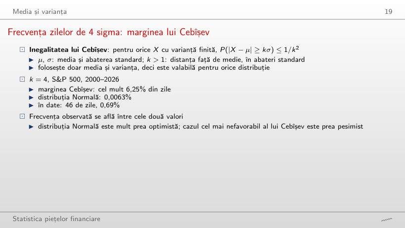
Zile cu |r − media| > kσ: date, distribuția Normală și marginea lui Cebîșev
Exemplu lucrat: marginea lui Cebîșev față de date
Răspuns
4,90% (329 de zile), aproape de 4,55% în distribuția Normală. La 2 abateri standard datele seamănă cu distribuția Normală; diferența apare în coadă: la k = 4 sînt 46 de zile (0,69%), de 108 ori mai mult decît 0,0063% în distribuția Normală, iar la k = 6 sînt 12 zile, față de 1,3 × 10−5 zile așteptate. Marginea lui Cebîșev, 1/k², este valabilă pentru orice distribuție cu varianță finită, de aceea este mult peste date.
Distribuții comune și dependență
Distribuții comune ale randamentelor zilnice
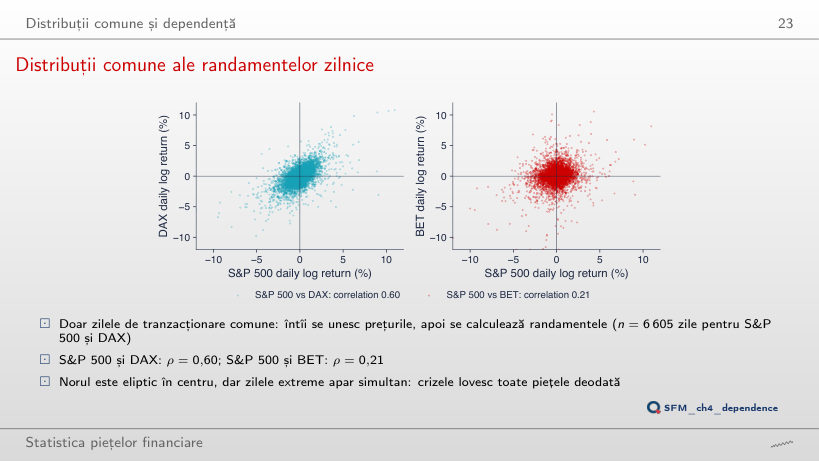
Răspuns
0,63, în 242 de zile comune, de trei ori valoarea pe întreaga perioadă. În 2008 corelația este 0,28, în 2017 0,20. Pentru S&P 500 și DAX: 0,69 în 2020, 0,62 în 2008 și 0,57 în 2017, față de 0,60 pe toată perioada. Corelația crește în anii de criză, adică exact cînd diversificarea ar fi necesară.
Exemplu lucrat: un portofoliu 50/50 din S&P 500 și DAX
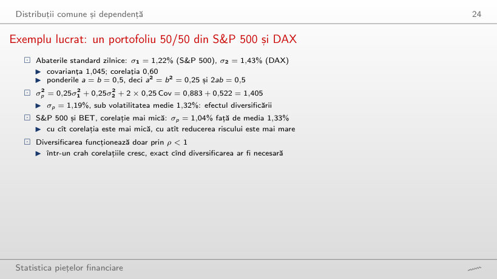
Varianțe, covarianțe și corelații ale randamentelor zilnice (%)
Perechi de serii pe zilele comune
Exemplu lucrat: volatilitatea portofoliului a/b
Răspuns
La a* = (σ2² − Cov)/(σ1² + σ2² − 2Cov) = 0,69, cu σp = 1,163%, față de 1,186% la a = 0,5. Ponderea S&P 500 este mai mare pentru că volatilitatea lui este mai mică (1,221% față de 1,429%), dar nu 1: cu ρ = 0,60, o parte de DAX reduce încă riscul. Pentru S&P 500/BET, cu ρ = 0,21: a* = 0,60 și σp = 1,025%.
Media condiționată și varianța condiționată
Exemplu lucrat: două regimuri
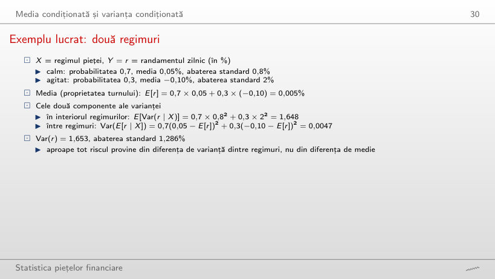
Două regimuri: componentele varianței
Exemplu lucrat: media și varianța totală
Datele: rt după chintila lui |rt−1|
Răspuns
1,776%: varianța în interiorul regimurilor crește la 0,7 × 0,8² + 0,3 × 3² = 3,148, iar componenta dintre regimuri rămîne 0,0047, deci Var(r) = 3,153. Media ponderată a abaterilor standard, 0,7 × 0,8 + 0,3 × 3 = 1,46%, subestimează riscul: se adună varianțe, nu abateri standard. În date, pentru S&P 500, componenta dintre chintile este 0,009% din varianța totală.
Randamentul de azi dată fiind mișcarea de ieri
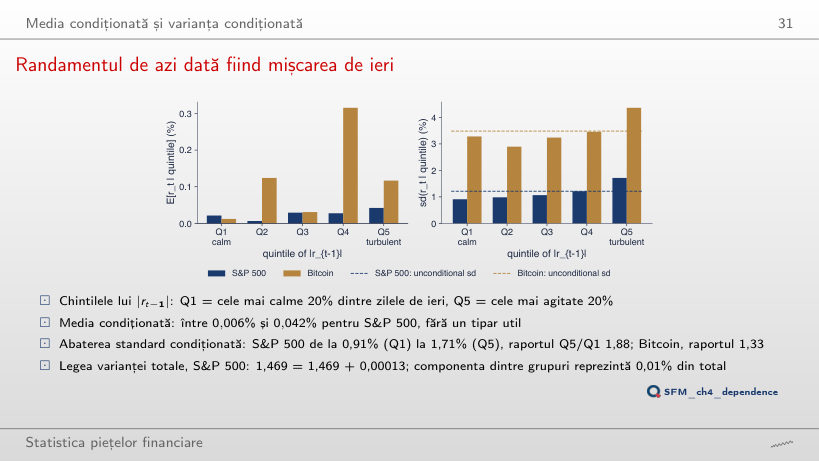
Răspuns
2,22: 2,03% în grupul cel mai agitat față de 0,92% în cel mai calm. Cu 2 grupuri raportul este 1,43: grupurile extreme sînt mai extreme cînd sînt mai înguste. Componenta dintre grupuri a varianței totale rămîne neglijabilă: 0,054% din total la 10 grupuri, 0,009% la 5. Mișcarea de ieri spune mult despre riscul de azi și aproape nimic despre media de azi.
Legea numerelor mari și CLT
Două teoreme limită
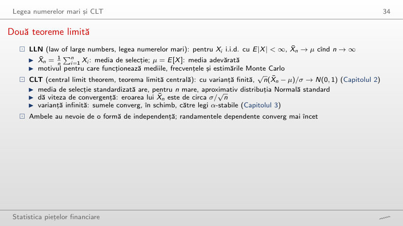
S&P 500: media cumulată după n zile
Exemplu lucrat: eroarea standard a mediei
Răspuns
Circa 38 de ani: n = (2s/r̄)² = (2 × 1,213/0,0247)² = 9 633 de zile. t crește cu √n, deci pentru un t de 2/1,67 = 1,20 ori mai mare trebuie de 1,43 ori mai multe zile. Pentru o eroare standard de două ori mai mică trebuie de patru ori mai multe zile (26 856). Media cumulată din 2000 este încă negativă după 100, 1 000 și 2 500 de zile.
LLN pentru randamentul mediu: convergență lentă
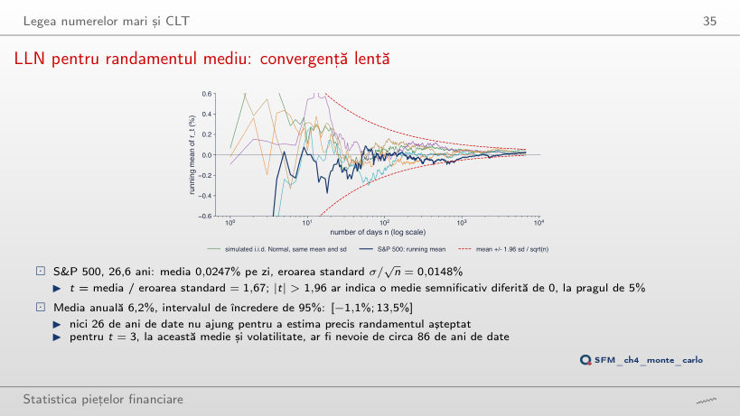
Răspuns
2,83: media zilnică este 0,0480% (12,1% pe an), eroarea standard 0,0169%. Eșantionul din 2009 începe după criza din 2008. Din 2003, t = 2,38; din 2020, t = 1,64 cu doar 1 687 de zile. Intervalul de 95% al mediei anuale este [3,7%; 20,4%] din 2009 și [−1,1%; 13,5%] din 2000. Media estimată depinde mult de începutul eșantionului; un început ales după ce s-au văzut datele nu mai dă un test valid.
Numere aleatoare și Monte Carlo
Exemplu lucrat: un LCG cu M = 16
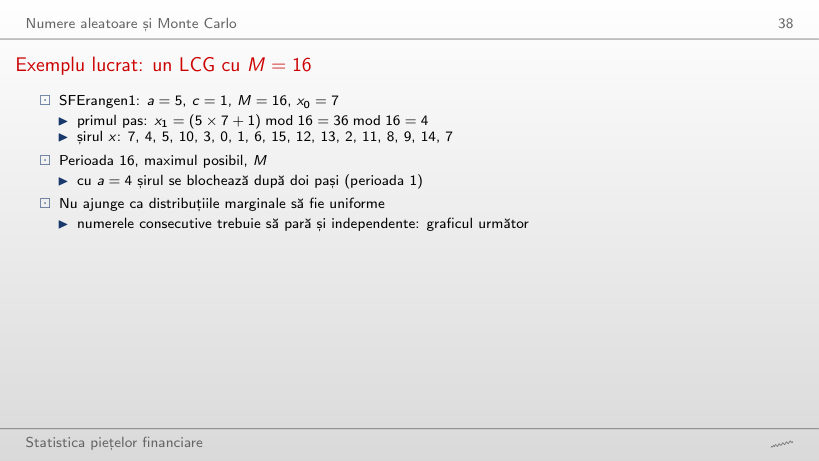
M = 16: perioada pentru fiecare multiplicator a, cu c și x0 alese
Exemplu lucrat: pașii unui LCG și perioada lui
Răspuns
După doi pași: x1 = 29 mod 16 = 13, x2 = 53 mod 16 = 5, apoi 4 × 5 + 1 = 21 ≡ 5, deci șirul rămîne 5 (perioada 1). Slide-ul spune „după un pas”; primul pas duce însă la 13. Cu M = 16 și c impar, perioada maximă 16 apare exact cînd a − 1 este multiplu de 4 (a = 1, 5, 9, 13, condiția Hull–Dobell); a = 1 dă însă șirul 7, 8, 9, …, cu perioadă maximă și fără nimic aleator.
RANDU: numerele aleatoare cad mai ales în plane (SFErandu)
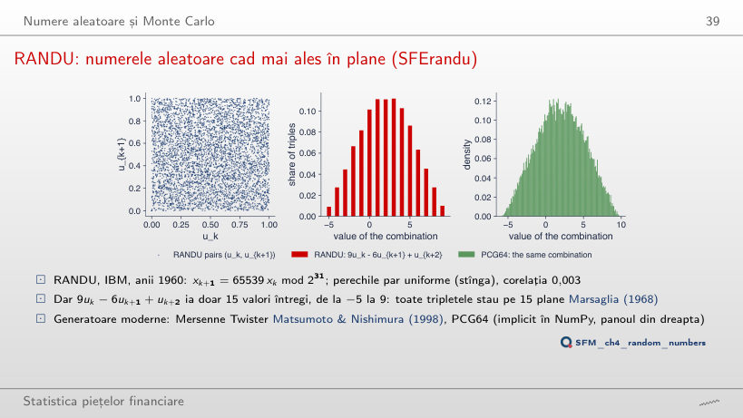
Răspuns
15, de la −5 la 9, ca pentru orice sămînță impară. Relația vine din multiplicator: 65539 = 216 + 3, deci a² = 6a − 9 (mod 231) și xk+2 = 6xk+1 − 9xk (mod 231), oricare ar fi x0. Corelația perechilor rămîne mică (0,0078 pentru x0 = 99), deci un test pe perechi nu vede defectul. Cu PCG64, combinația ia 29 998 de valori diferite în 29 998 de triplete.
Metoda transformării inverse
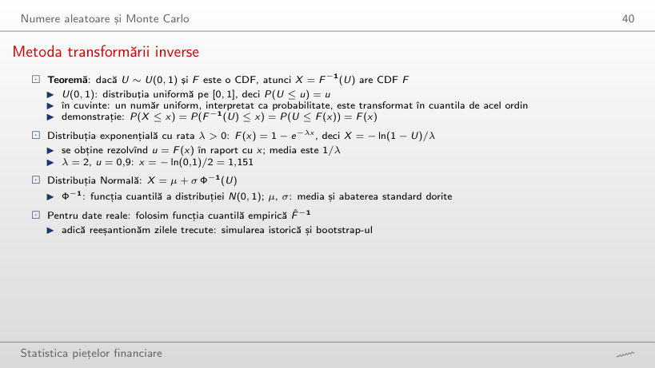
Exemplu lucrat: același u prin trei funcții cuantilă
Coada stîngă a celor 200 000 de extrageri din curs (S&P 500)
Răspuns
Pentru u > 1 − e−1 = 0,632: P(X > 0,5) = e−λ × 0,5 = e−1 = 36,8%. Mediana este ln 2/λ = 0,347, sub medie: distribuția exponențială este asimetrică la dreapta. În tabel, cele 7 extrageri Normale sub −5%, față de 3,4 așteptate, diferă cu 1,9 abateri standard Poisson (√3,44 = 1,85): zgomot de simulare, nu un defect al metodei.
Transformarea inversă: extrageri exponențiale, Normale și istorice
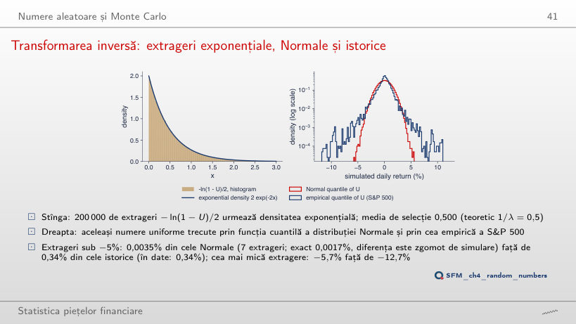
Răspuns
1,7 × 10−3%, adică 0,0017%, sau 3,4 extrageri așteptate din 200 000. Cu atît de puține evenimente, abaterea standard a numărului de extrageri este circa √3,4 ≈ 1,84, deci 7 extrageri sînt zgomot de simulare, nu un defect al metodei. Extragerile istorice dau 0,34% (685 din 200 000), ca datele: transformarea inversă cu funcția cuantilă empirică reproduce coada eșantionului. La −8%: nicio extragere Normală, 148 istorice.
Exemplu lucrat: probabilitatea unei pierderi lunare prin Monte Carlo (2/2)
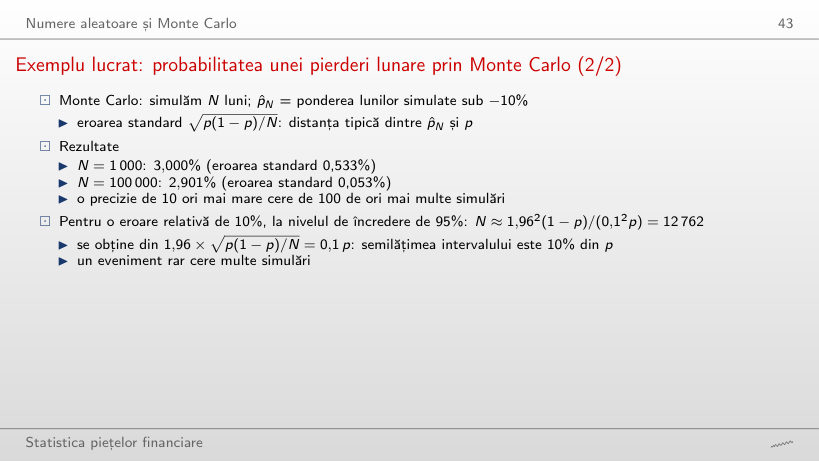
Estimarea Monte Carlo și eroarea ei standard
Exemplu lucrat: probabilitatea exactă, estimarea și eroarea standard
Răspuns
√(p(1 − p)/N) = 0,0334%, de trei ori p. Cu 1 000 de simulări estimarea este 0 (nicio lună simulată sub −20%); cu 100 000 este 0,007%, cu un milion 0,0117% (eroarea standard 0,0011%). Pentru L = 10%, eroarea standard la N = 1 000 este 0,533%, adică 18% din p = 2,922%.
Monte Carlo converge cu viteza 1/√N
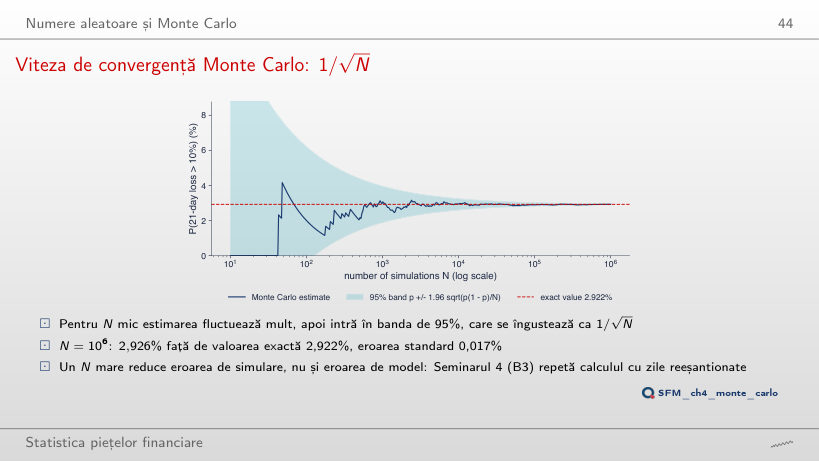
Răspuns
Circa 146 000 (146 201): p scade de la 2,922% la 0,262%, iar N ≈ 1,96²(1 − p)/(0,1² p) crește aproape ca 1/p. Pentru 20%, p = 0,0112% și N = 3,44 milioane; cu un milion de simulări estimarea este 0,0117%, cu eroarea standard 0,0011%, circa 10% din p. Eroarea absolută √(p(1 − p)/N) scade odată cu p, dar eroarea relativă crește.
Modelul binomial
Exemplu lucrat: un arbore cu doi pași
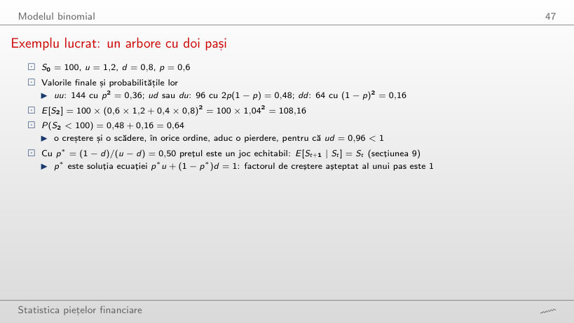
Nodurile finale ale arborelui, S0 = 100 (rîndurile evidențiate: Sn < 100)
Exemplu lucrat: media, probabilitatea unei pierderi și p*
Răspuns
0,352: nodurile sînt 172,8, 115,2, 76,8 și 51,2, iar sub 100 sînt cele cu cel mult o creștere: 0,4³ + 3 × 0,6 × 0,4² = 0,064 + 0,288. Cu doi pași, nodul ud = 96 era sub 100 pentru că ud = 0,96 < 1; cu trei pași, nodul cu două creșteri este 115,2. Media E[S3] = 100 × 1,04³ = 112,49 crește oricum cu n.
Calibrarea arborelui pe o piață (Cox–Ross–Rubinstein)
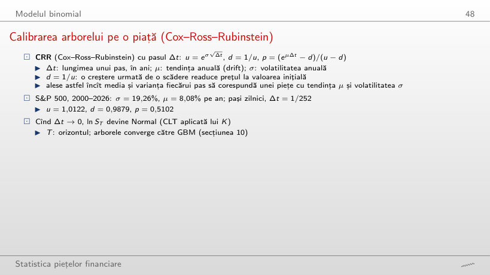
Arborele CRR calibrat pe S&P 500 (σ = 19,26%, μ = 8,08%), S0 = 100, T = 1 an
Exemplu lucrat: P(ST ≤ 100) și P(ST < 100)
Răspuns
34,9%. Valoarea de 39,7% este P(ST ≤ 100): include nodul ST = 100 (k = 126 de creșteri), cu probabilitatea C(252, 126)p126(1 − p)126 = 4,8%. Limita lognormală, 37,3%, este practic media celor două valori. Cu un număr impar de pași nu există nod în 100: 37,3% la 251 și la 253 de pași.
Traiectorii binomiale și limita lognormală (SFEBinomp)
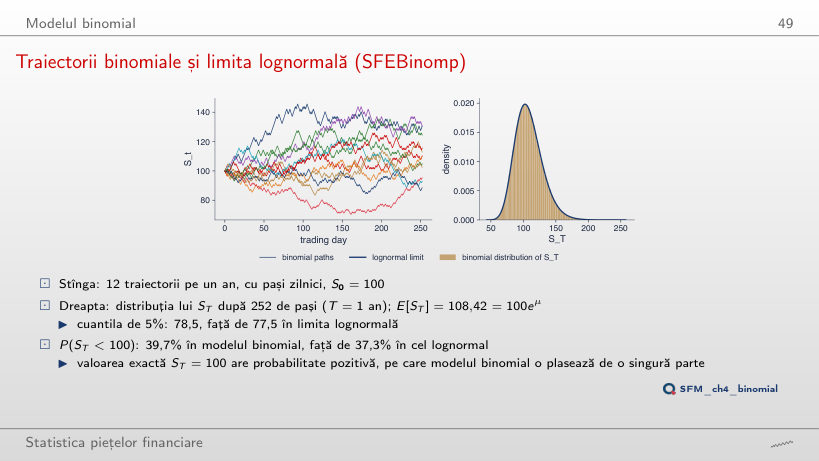
Răspuns
61,9%, din care 47,3% este nodul ST = 100 (o creștere și o scădere, ud = 1); P(ST < 100) este doar 14,7%. Cu n par, arborele are un nod exact în S0, cu o probabilitate care scade ca 1/√n: 6,7% la 126 de pași, 4,8% la 252. Cu 5 pași nu există acest nod și P(ST < 100) = 36,5%. Valoarea de 39,7% de pe slide este P(ST ≤ 100); strict sub 100 sînt 34,9%. E[ST] = 108,42 la orice n, prin construcția lui p.
Procese stochastice în timp discret
Procesul AR(1): simulare
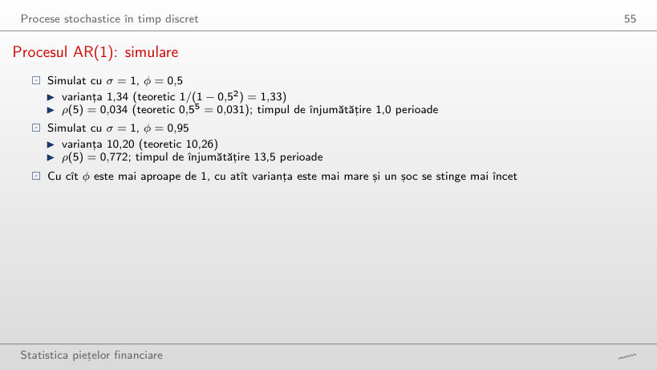
AR(1) cu σ = 1: valori teoretice, cele 500 de șocuri ale graficului și simularea lungă din curs
Exemplu lucrat: varianța, autocorelația și timpul de înjumătățire
Răspuns
ln 0,5/ln 0,9 = 6,6 perioade. Varianța staționară este 1/(1 − 0,81) = 5,26, iar ρ(5) = 0,9⁵ = 0,590. Pe cele 500 de șocuri ale graficului, varianța de selecție a procesului cu φ = 0,9 este 6,44: cu o persistență mare, 500 de puncte conțin puține perioade aproape independente, iar varianța de selecție se depărtează de valoarea teoretică.
Zgomot alb, AR(1) și mers aleator, aceleași șocuri
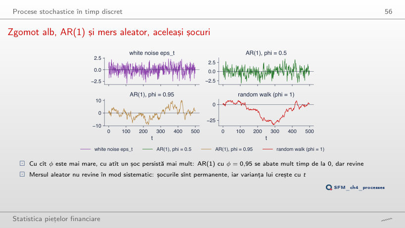
Răspuns
ln 0,5/ln 0,99 = 69,0 perioade, de cinci ori mai mult. Varianța staționară 1/(1 − φ²) crește de la 10,26 la 50,25, iar ρ(5) = 0,99⁵ = 0,951. Procesul este încă staționar și revine la 0, dar pe 500 de puncte se deosebește greu de un mers aleator; numai φ = 1 face șocurile permanente.
Întrebare pentru sală: care serie este cea reală?
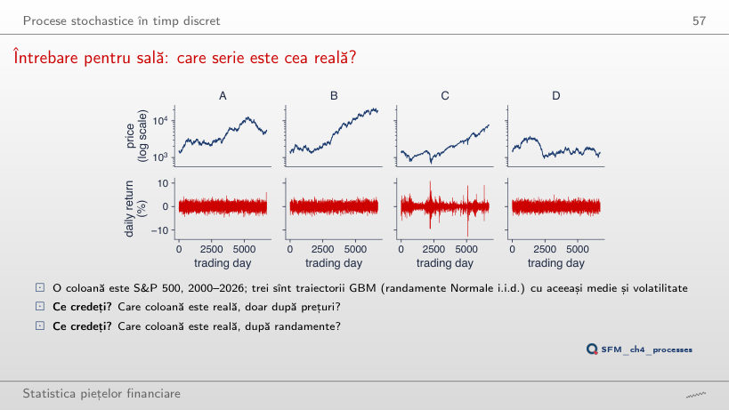
Răspuns
Coloana C. Prețurile nu o deosebesc: și mersurile aleatoare cu tendință au avînturi și căderi lungi. Randamentele o deosebesc: exces de boltire 10,67 față de cel mult 0,02 în simulări, Corr(rt², rt−1²) = 0,313 față de cel mult 0,006, cea mai mare mișcare zilnică 12,8% față de 6,2%. Peste 4 abateri standard: 46 de zile în C, cel mult una în coloanele simulate; peste 6 abateri standard: 12 zile în C, niciuna în simulări.
Procesul Wiener și mișcarea browniană geometrică
De la mersul aleator la procesul Wiener (SFEWienerProcess)
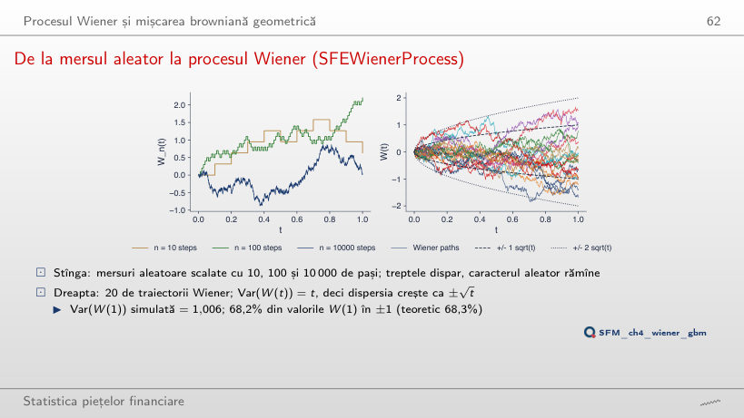
Răspuns
95,37% în simulare, teoretic 2Φ(2) − 1 = 95,45%, pentru că W(1) ~ N(0, 1). Inegalitatea lui Cebîșev garantează doar cel puțin 1 − 1/2² = 75%, pentru orice distribuție cu varianță finită. Banda ±k√t descrie distribuția lui W(t), nu o margine a traiectoriilor: dintre cele 20 de traiectorii ale graficului, toate se termină în ±2, dar doar 14 în ±1. Pentru k = 3: 99,67% față de 99,73%.
GBM: media, mediana și simularea
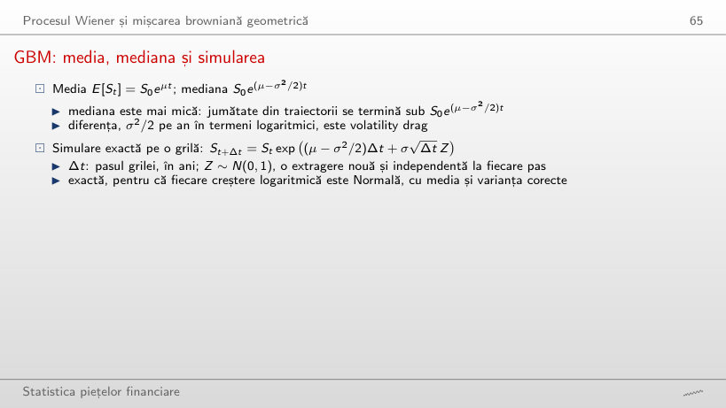
GBM calibrat pe fiecare serie, S0 = 100
Exemplu lucrat: media, mediana și cuantila lui ST
Răspuns
De eσ²T/2 = e0,666² × 5 = 9,2 ori: media 68 252, mediana 7 437. Raportul dintre medie și mediană depinde doar de σ²T. Pentru S&P 500 (σ = 19,26%) raportul este 1,20 (224,4 față de 186,4). Media unui GBM este dominată de cîteva traiectorii foarte mari; o traiectorie tipică urmează mediana.
GBM calibrat pe S&P 500 (SFEsimGBM)
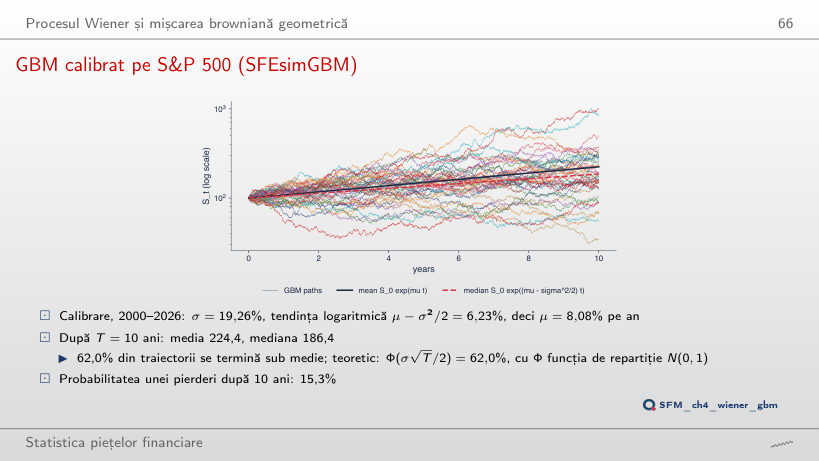
Răspuns
La 100,8 = 100e(0,0808 − 0,08) × 10: tendința logaritmică μ − σ²/2 scade la 0,08% pe an. Media rămîne 224,4, pentru că depinde doar de μ. Probabilitatea unei pierderi după 10 ani crește de la 15,3% (σ = 19,26%) la 49,7%, iar ponderea traiectoriilor sub medie, Φ(σ√T/2), de la 62,0% la 73,6%. σ = 40% este o rulare suplimentară a formulelor capitolului, nu un rezultat din curs.
Traiectorii reale în evantaiul GBM
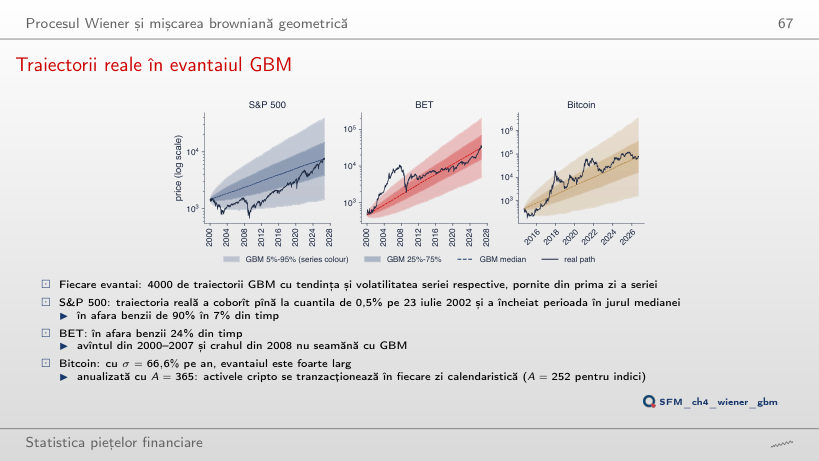
Răspuns
12,7%: mai puțin, dar de 13 ori valoarea nominală; avîntul din 2000–2007 și crahul din 2008 duc traiectoria departe de GBM. S&P 500: 7,0% în afara benzii de 90% și 0,0% în afara celei de 99%; Bitcoin: 4,5% și 0,1%. Zilele unei singure traiectorii nu sînt observații independente: traiectoria rămîne mult timp de aceeași parte a medianei, așa că și S&P 500 este în afara benzii de 50% în 64,2% din zile.
Limitele modelului GBM
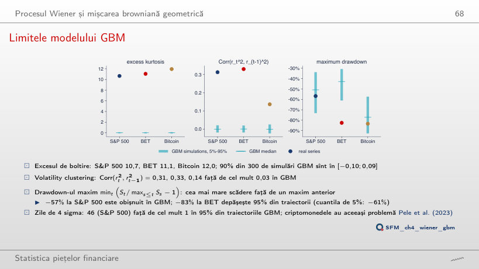
Zile cu |r − media| > k abateri standard: date, simulări GBM și distribuția Normală
Răspuns
12 zile în date și 0 în fiecare dintre cele 300 de simulări. BET are 17 astfel de zile, Bitcoin 4. La k = 3, S&P 500 are 105 zile, față de mediana GBM 18; la k = 8, încă 4 zile. În distribuția Normală, numărul așteptat de zile peste 6 abateri standard în 6 714 zile este de ordinul 10−5.
Randamente logaritmice zilnice, în %: S&P 500, DAX și BET din ianuarie 2000, Bitcoin din septembrie 2014 (7 zile pe săptămînă), pînă la 18 septembrie 2026. Prețuri de închidere EODHD. Simulările sînt cele din curs: aceleași modele, aceleași numere de traiectorii și aceleași semințe ale generatorului.